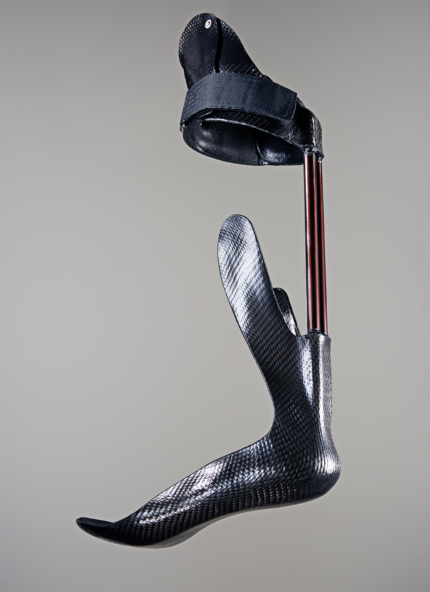
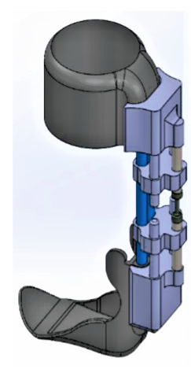
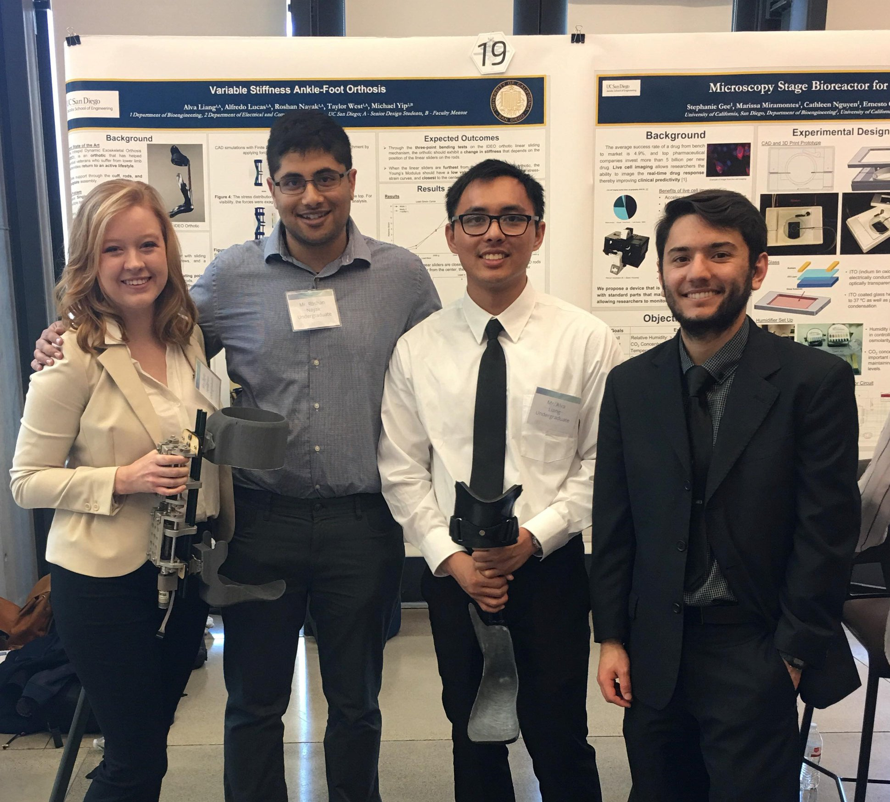

The IDEO, known as the Intrepid Dynamic Exoskeletal Orthosis, is a single-stiffness, passive orthosis that combat veterans with lower limb extremities use to restore functionality in their legs. However, since the IDEO has single-stiffness rods with non-adjustable stiffness, the orthosis is not suitable for different types of activities. For instance, to perform less strenuous activities, such as walking, the rods should be more compliant. For more strenuous activites, such as running and jumping, the rods should be more stiff. Long term effects could occur from having incorrectly stiff rods. As a consequence, users would have to either carry multiple orthoses with different stiffness rods, or be adversely affected by the single-stiffness rods.
To address the issue of the single-stiffness orthosis, I collaborated with teammates Roshan Nayak, Taylor West Henderson, and Alfredo Lucas, along with the Naval Medical Center in San Diego as well as the Advanced Robotics and Controls Lab (ARC Lab) under Professor Michael Yip at the University of California, San Diego. We brainstormed and drafed design ideas with the Naval Medical Center, while also gaining exposure to their Gait Lab. This helped us observe the behavior of users of the IDEO orthosis, and gave insights into the design of the attachment. A CAD model was constructed, and then a first prototype was built.
After evaluating the design with Professor Michael Yip and the Naval Medical Center, we received feedback and changed the design for a second round of CAD modelling and prototyping.

We presented our prototypes and poster at the UC San Diego Bioengineering Day in 2018, and won the Eugene H. Mead Memorial Award for contributing to the advancement of veteran research!
